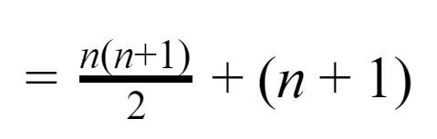
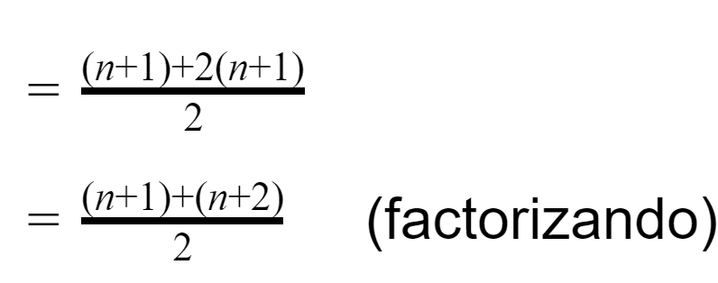
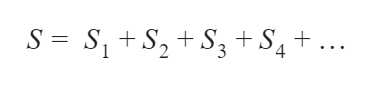
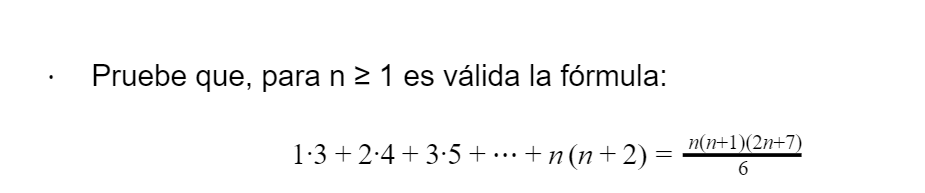
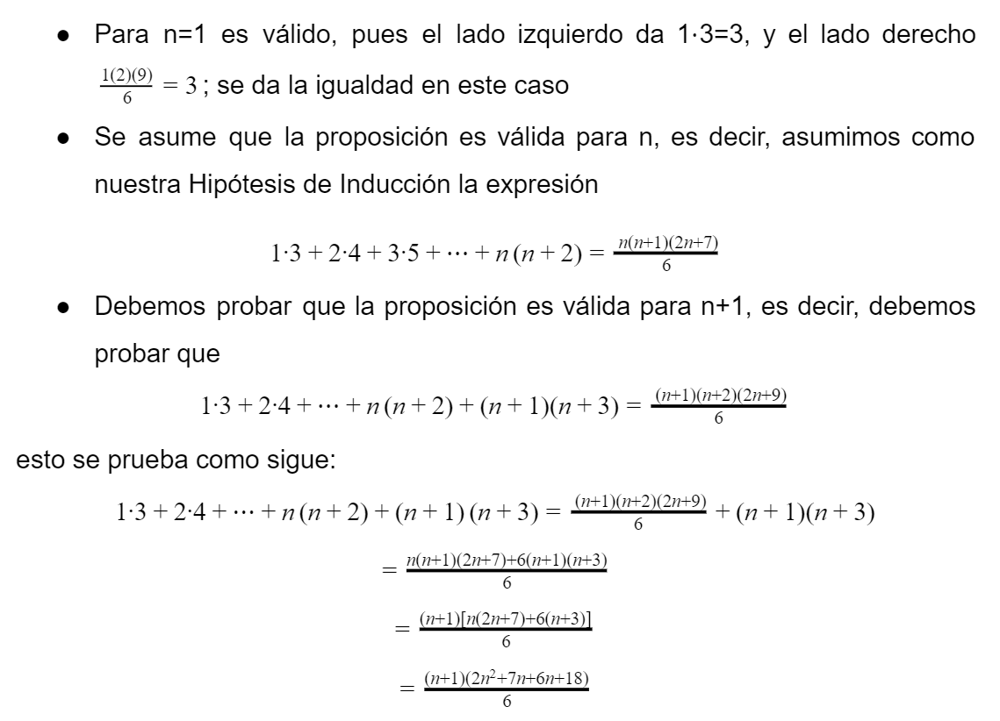

Hay muchos dominios que contienen un número ilimitado, a veces infinito de elementos. Por ejemplo, números naturales, enteros, expresiones lógicas, etc. Cuando los dominios son finitos, es posible describir sus elementos uno por uno, y sus propiedades se pueden enumerar. Sin embargo, en dominios infinitos esto es imposible. La pregunta, entonces, es cómo generar un número infinito de elementos, usando datos un número finito, más difícil, muy finito de reglas. La solución es usar < repetidamente " o, usando un término técnico," recursivamente ", ese conjunto muy finito de reglas. Para superar esta dificultad, existe un método específico de inducción matemática, que ha demostrado ser extremadamente versátil, efectivo y efectivo, e incluso, muchas veces, eficiente.
Introducido por Mauloryco en 1575, fue utilizado por Pascal, quien le atribuye el descubrimiento, en el estudio y sistematización de su efecto, Mauloryco demostró, a través de dicho principio, la propiedad
Por cierto, De Morgan cometió un círculo vicioso al explicar el principio de inducción matemática mediante el teorema que Mauloryco probó usando el citado principio. Finalmente, Bernoulli, en su Arte de la conjetura de 1686, publicado póstumamente, lo empleó con tanta frecuencia que Köstner lo denominó método de Bernoulli.
El principio de inducción matemática es una ley fundamental del razonamiento lógico-matemático y una poderosa arma de demostración que generalmente se usa para establecer la veracidad de una lista potencialmente infinita de proposiciones y para definir secuencias de objetos. Su uso siempre es a posteriori, es decir que para poder llevarlo a cabo con éxito es necesario construir previamente una familia de proposiciones. Por ejemplo, se emplea en las ciencias de la computación para demostrar propiedades acerca de la complejidad de algoritmos, corrección y verificación de programas, teoremas sobre arboles y grafos, así como en las matemáticas se emplea en un amplio abanico de identidades y desigualdades algebraicas y numéricas.
Desde la época de Aristóteles hasta muchos siglos después con Peirce, se distinguen tres tipos de primigenios de inferencia: deducción, inducción y abducción. La deducción deriva sus conclusiones a partir de un análisis basado en argumentos lógicos y en este sentido, todos los argumentos matemáticos incluida la inducción matemática, son argumentos deductivos; la inducción implica la inferencia de reglas generales a partir de observaciones o casos particulares y por último la abducción, permite establecer una hipótesis y conjeturas que después tendrán que validarse mediante los métodos anteriores.
La inducción desempeña un papel al proporcionarnos información sobre lo que es probable que sea cierto y, por lo tanto, qué es una conjetura razonable. El problema con cualquier prueba es que necesitamos conocer el resultado antes de comenzar a probarlo.
El procedimiento general para llevar a cabo una inducción matemática es el siguiente:
Sea k un entero fijo (positivo, negativo o cero). Supóngase que para cada entero n≤k se tiene una proposición correspondiente P(n) y que se desea demostrar que P(n) es verdadera para todas las n≥k.
Supóngase que:
P(k) es verdadera
Entonces el principio de Inducción matemática establece que P(n) es verdadera para todas las n≥k
Por consiguiente, si se quiere probar la validez de una proposición P(n) para todas las n≥k, se deberá probar primero que P(k), o sea la proposición correspondiente al primer entero k, es verdadera. Y después se tendrá que mostrar que si la respuesta se supone como verdadera para algún entero n≥k, lo es también para n+1. Al primero paso se le llama paso básico de la inducción; el segundo se llama paso inductivo. En general, el paso básico es sencillo; pero se requiere trabajo para demostrar que, si P(n) se supone como verdadera, entonces se sigue que P(n+1) es verdadera.
Un ejemplo utilizando estos pasos es el siguiente:
Demuestre por inducción matemática para toda n≥1,

Solución: Sea P(n) el enunciado

En este ejemplo, k=1.
Paso básico: Se deberá primero demostrar que P (1) es verdadera. Se ve que P (1) es:

lo cual evidentemente es verdadero.
Paso inductivo: Supóngase que se sabe que P(n) es verdadera para algún n≥1. Esto es, se supone que para algún n fijo n≥1,

Ahora se desea probar la validez del enunciado P(n+1). Se tiene


[La expresión entre corchetes se sustituye por n(n+1)2 usando la ecuación (1)]

Lo que prueba la validez de P(n+1). Por el principio de inducción matemática, se sigue que P(n) es verdadera para todas las n≥1.
Se debe recordar que en las pruebas por inducción matemática no se puede comenzar afirmando que P(n+1) es verdadera y después manipular el resultado porque además de que esto será más complicado, nunca se va a lograr en el caso de que no sea verdadero. Este error es muy común por un mal uso de la inducción matemática.
La Axiomática de Peano y la Inducción matemática
Peano publicado, en 1889, sus Principios de aritmética, en latín, claro. En ellos, daba nueve axiomas, que, previamente, en 1895, en su obra Formulario de matemáticas, volumen II, esta vez en francés, eran cinco. Dichos axiomas son los conocidos universalmente, en su honor, como axiomas de Peano, base de las modernas axiomatizaciones de la aritmética; basado, a su vez, según reconoció él mismo, en un trabajo previo de esta reducción de cuatro axiomas es adecuada, ya que los axiomas 2, 3, 4 y 5 de los últimos nueve, preocupaciones sobre la igualdad, afectaron efectivamente la lógica elemental.
El axioma 9 de sus Principios aritméticos, o 5 de su Forma matemática es la transcripción del llamado principio de inducción completa (matemáticas) o razonamiento por recurrencia.
Este principio es generalmente reconocido, por la mayoría de los matemáticos y lógicos, como específico de las matemáticas. Una pregunta separada y bastante diferente, que divide radicalmente a los" lógicos ", como Frege o Russell, de los “intuicionistas ", como Poincaré o Brower, es este principio o no reducible a los términos lógicos F Peano, por lo tanto, un conjunto de propiedades simples, conocidas como axiomas o postulados, que permite la construcción de números naturales, como sigue:

Como puede ver fácilmente, estas son propiedades bien conocidas de los números naturales. De hecho, los postulados I y II no requieren más explicaciones. III dice que hay un primer número natural, 1. El postulado IV establece que diferentes números naturales tienen diferentes "siguientes" o "sucesores" (m + 1) y (n + 1). Finalmente, el postulado V esencialmente dice que puede alcanzar cualquier número natural a partir con 1 y contando los siguientes consecutivos; es decir, el principio de inducción.
Existen dos principios de inducción matemática, ambas con el propósito de comprobar la veracidad de las hipótesis creadas.
El primer principio de inducción matemática es el que venimos redactando desde el inicio, con una prueba y una hipótesis que tiene que ser comprobada mediante el método algebraica.
El segundo teorema o forma de la inducción se dice que es más útil que el primero porque nos permite asumir más en el paso inductivo. Y el teorema es el siguiente:
S (1), S (2), es una secuencia de declaraciones con las siguientes dos propiedades:

Entonces, para todos los enteros positivos n, S (n) es verdadero.
Aunque este teorema parece más débil que la primera forma de inducción, debido a la necesidad de asumir más en el paso inductivo para obtener la misma conclusión, es realmente equivalente a la primera forma.
Los dos principios de inducción que se mencionaron anteriormente son equivalentes, es decir, si aceptamos como válido uno de ellos, entonces el otro también es válido. A primera vista es más fácil admitir que el segundo principio de inducción implica al primer principio, ya que, si está permitido suponer todos los casos previos, entonces está permitido suponer el caso inmediatamente anterior.
La inducción matemática se usa con frecuencia en matemáticas discretas y ciencias de la computación. Se utiliza en muchas cantidades que nos interesa medir, como el tiempo de ejecución o el espacio utilizado en la memoria, generalmente se limitan a enteros positivos. Por lo tanto, la inducción es una forma natural de probar hechos sobre estas cantidades. En estos casos no se distingue entre el primer principio o el segundo, simplemente se piensa en ambos como inducción.
Las leyes de edición y la multiplicación, clausura, conmutativa, asociativa y cancelación, y las dos distributivas de una respecto a la otra, pueden probarse mediante este principio de inducción matemática.
Inducción fuerte.
En nuestra prueba del teorema de división de Euclides, teníamos una declaración de la forma p (m), y, suponiendo que fuera falsa, elegimos una m más pequeña de tal manera que p (m) fuera falsa para algunas n. Esta elección significaba que podríamos suponer que p (m') es cierto para todos los m < m no negativos. Necesitábamos esta suposición porque teníamos que demostrar que p (m-n) →p (m) para obtener nuestra contradicción.
La esencia del método para probar el teorema de división de Euclides es la siguiente: Utilizando una implicación de la forma:
- Tenemos una declaración q(k) que queremos demostrar para todos los k más grandes que algún entero.
- Suponemos que es falso; entonces, debe haber una k más pequeña para la cual q (k) es falsa.
- El paso anterior implica que podemos asumir que q (k') es verdadero para todos los k' en el universo
- Luego usamos este supuesto para derivar una prueba generadora de q (k), de ahí nuestra contradicción.
Supongamos primero que tenemos una prueba de que hay una contradicción en la siguiente prueba de q (0).

para todos los k mayores que 0. Entonces, desde q (0), q (1), podemos probar q (1); de q (0) ᴧ q(1), podemos probar q (2); de q (0) ᴧ q (1) ᴧ q (2), podemos probar q (3); y así. Este método nos da una prueba de q (n) para cualquier n que deseamos, y es otra forma del principio de inducción matemática.
Utilizamos este enfoque cuando, como en el teorema de división de Euclides, podemos obtener una de la forma q (k ') ⇒ q (k) para algunos k’ < k o cuando podemos obtener una de la forma q (0) ᴧ q (1) ᴧ q (2) ᴧ … ᴧ q (k - 1) ⇒q (k).
(Como es el caso en el teorema de división de Euclides, a menudo no sabemos realmente qué es k', por lo que el primer tipo de situación es realmente solo una razón por la que no tratamos la primera de las dos implicaciones por separado).
Recursión. Una visión de la inducción
La recursividad es una técnica utilizada en programación que nos permite que un bloque de instrucciones se ejecute un cierto número de veces (el que nosotros determinemos). En muchos lenguajes, los métodos pueden llamarse a sí mismos. Gracias a esto, podemos utilizar a nuestro favor la recursividad en lugar de la iteración para resolver determinados tipos de problemas. Los programas recursivos tienen similitud entre la recursividad utilizada en su implementación y la inducción. Ambos hablan de casos básicos y a primera vista ambos pueden parecer circulares pues en la recursividad una función se llama a sí misma.
Cuando probamos la implicación en el paso inductivo de una prueba inductiva, demostramos una propiedad para una instancia de otras instancias. En ambos casos, lo mismo impide la circularidad: suponiendo que la propiedad es verdadera para las instancias resueltas por recursión cuando la función se llama a sí misma siempre son más pequeñas que la instancia actual y la recursión eventualmente se reduce a casos base que se tratan directamente.
Las instancias asumidas en el paso inductivo de una prueba inductiva son siempre más pequeñas que la instancia actual y la inducción eventualmente se reduce a casos base que se tratan directamente. Mientras los casos base se manejen correctamente y las instancias más grandes se resuelvan correctamente construyendo soluciones a instancias más pequeñas, la recursión terminará y calculará la respuesta correcta.
Pensar en la inducción en términos de recursión es una forma muy útil de desarrollar pruebas inductivas. Una prueba inductiva puede verse como una descripción impresa de un programa recursivo que completa, una prueba horriblemente detallada para cualquier instancia elegida siempre que n sea mayor que algún valor.
2.4.1 Notaciones
Las principales notaciones que se utilizan en el método de demostración por inducción matemática son los siguientes:
Notación Sigma.
Es una notación matemática que permite representar sumas de varios sumandos, n o incluso infinitos sumandos, evitando el empleo de los puntos suspensivos o de una explícita notación de paso al límite. Se expresa con la letra griega sigma mayúscula.

Representa principalmente la sucesión de una suma de la siguiente manera:

Notación del producto.
El producto también conocido como multiplicatorio, es una notación que representa una multiplicación de una cantidad arbitraria.
La notación se expresa con la letra griega pi mayúscula Π

2.4.2 Aplicaciones
La aplicación que tiene la inducción matemática esta principalmente en las series o sucesiones.
En matemáticas, una serie es la generalización de la noción de suma a los términos de una sucesión matemática. Informalmente, es el resultado de sumar los términos:

lo cual suele escribirse en forma más compacta con el símbolo de sumatorio.
El estudio de las series consiste en la evaluación de la suma de un número finito n de términos sucesivos, y mediante un asaje al límite identificar el comportamiento de la serie a medida que n crece indefinidamente.

Solución: Aplicamos el método de inducción matemática
